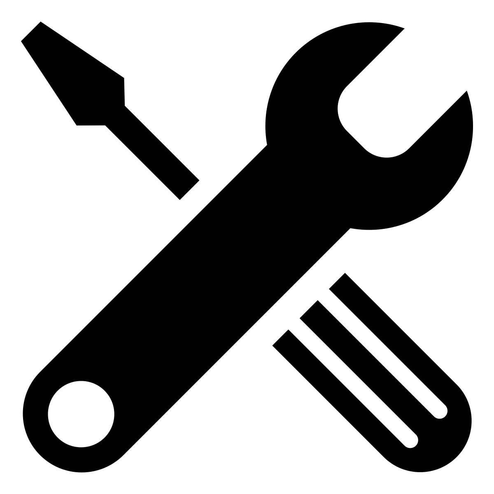

Our Slack community is renowned for being friendly and a great place to talk about the QRL, cryptography and all things cryptocurrency.
Spam besets most open Slack communities and whilst we do try to keep the spammers at bay, inevitably some slip through. Never click a link without thinking 'is someone trying to scam me?' - in particular, we never send links by notification. If Slackbot does this, someone is trying to con you... beware!
Periodically, to prevent abuse, we disable the automated signup to our Slack. If the link doesn't work, please email info@theqrl.org and request an invitation.
We apologise for the inconvenience.
Roadmap
The Idea
Founder noticed investment in QC development, ECDSA being deprecated by the NSA and given the vulnerability in all existing blockchain ledgers conceived the idea of a post-quantum ledger.
Creation of post-quantum secure hash-based digital signature library
August 2016

Proof of work
Creation of a POW ledger utilising Merkle signature scheme addresses with Winternitz and Lamport one-time signatures.
September 2016Whitepaper Release
After discussion with developers, post-quantum cryptographers and research into existing roadmap of blockchain technology, the whitepaper was written to provide an overview of quantum resistant methodologies. The Winternitz OTS+ and Extended Merkle Signature Scheme (XMSS) were identified as the optimal solutions. This investigation also revealed the necessity of QRL to stand alone as a network with interoperability in the later pipeline.
November 2016POS
Design of a proof-of-stake algorithm (POS)
December 2016
Node
Prototype node development with basic POS algorithm and integration of XMSS signatures
January 2017
Node
Design and launch of the first iteration of the block explorer
February 2017
Private testnet
Iterative testing of POS algorithmic updates
March 2017
Alpha testnet
Launch of the Alpha testnet with nodes running on MacOS, Linux, Windows on hardware including Raspberry Pi.
Private seed presale round opens.
April 2017
Funding targets achieved
Public ICO no longer required
Start of integration of Ephemeral messaging layer to enable end-end secure data channels
May 2017
Public testnet
Node optimisation with C++. Golang node creation.
Internode encrypted communication (‘new hope’ lattice-based cryptography)
June 2017Ongoing Testing & Development
Web Wallet + other GUI work
Further Optimizations
Preparing for security testnet
← We Are Here
Security Testing
Bug Bounty Program
External Auditing
Genesis block
To come after thorough testing and auditing
1:1 Conversion of QRL (ERC 20) tokens to Official QRL
Ephemeral
Continued active node development
Completion of Ephemeral to be signature scheme agnostic.
Light client development
Light client API to enable apps and web enabled devices to access the QRL
Internode messaging compression
Research and development - post-quantum multi-signature transactions
2017-2018
PQ secure digital identification
Blockchain based ultra secure digital ID.
Leveraging Ephemeral messaging layer with off chain services: PQ secure data channels, PQ secure comms, PQ secure messenger services, PQ secure VOIP, PQ secure VPN.
PQ secure provenance and proof-of-existence services.
Feasibility of smart contract integration.
2018-2019